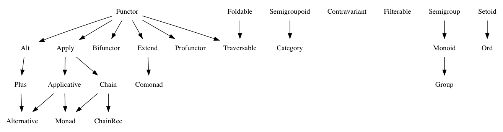

(又名 “代数 JavaScript 规范”)

该项目规定了通用代数数据结构的互操作性：
- Setoid
- Ord
- Semigroupoid
- Category
- Semigroup
- Monoid
- Group
- Filterable
- Functor
- Contravariant
- Apply
- Applicative
- Alt
- Plus
- Alternative
- Foldable
- Traversable
- Chain
- ChainRec
- Monad
- Extend
- Comonad
- Bifunctor
- Profunctor

概览
代数是遵循一定法则的、具有封闭性的，一系列值及一系列操作的集合。
每个 Fantasy Land 代数是一个单独的规范。一个代数可能依赖于其他必需实现的代数。
术语
-
“值”：任何 JavaScript 值，包括下面定义的结构的任何值。
-
“等价”：对给定值的等价性的恰当定义。这个定义应该保证两个值可以在其对应的抽象的程序中，能够安全地进行交换。例如：
- 当两个列表对应的索引上的值都相等时，它们是等价的。
- 当两个普通的 JavaScript 对象所有键值对都相等时，它们（作为字典）是等价的。
- 当两个 promises 生成相等的值时，它们是等价的。
- 当两个函数给定相同的输入，产生相同的输出时，它们是等价的。
类型签名符号
本文档使用的类型签名符号如下所述：[^1]
::_“是 xx 的成员”。e :: t读作：“表达式e是类型t的成员”。true :: Boolean- “true是类型Boolean的成员”。42 :: Integer, Number- “42是类型Integer和Number的成员”。
- 新类型可以通过类型构造函数创建。
- 类型构造函数可以接受零或多个类型参数。
Array是一个接受单个参数的类型构造函数。Array String代表包含字符串的数组的类型。后面每个都是Array String类型的：[]，['foo', 'bar', 'baz']。Array (Array String)代表包含字符串的数组的数组的类型。后面每个都是Array (Array String)类型的：[]，[[], []]，[[], ['foo'], ['bar', 'baz']]。
- 小写字母代表类型变量。
- 类型变量可以接受任何类型，除非受到类型约束的限制（参见下面的胖箭头）。
->(箭头) 函数类型的构造函数->是一个 中缀 构造函数，它接受两个类型参数，左侧参数为输入的类型，右侧参数为输出的类型。->的输入类型可以通过一组类型创建出来，该函数接受零个或多个参数。其语法是：(<input-types>) -> <output-type>，其中<input-types>包含零个或多个 “逗号-空格” （,）分开的类型表示，对于一元函数，圆括号也可以省略。String -> Array String是一种接受一个String并返回一个Array String的函数的类型。String -> Array String -> Array String是一种函数类型，它接受一个String并返回一个函数，返回的函数接受一个Array String并返回一个Array String。(String, Array String) -> Array String是一种函数类型，它接受一个String和Aray String作为参数，并返回一个Array String。() -> Number是一种不带输入参数，返回Number的函数类型。
~>(波浪形箭头) 方法类型的构造函数。- 当一个函数是一个对象（Object）的属性时，它被称为方法。所有方法都有一个隐含的参数类型 - 它是属性所在对象的类型。
a ~> a -> a是一种对象中方法的类型，它接受a类型的参数，并返回一个a类型的值。
=>(胖箭头) 表示对类型变量的约束。- 在
a ~> a -> a（参见上面的波浪形箭头）中，a可以为任意类型。半群a => a ~> a -> a会添加一个约束，使得类型a现在必须满足该半群的类型类。满足类型类意味着，须合法地实现该类型类指定所有函数/方法。
- 在
例如：
1 | traverse :: Applicative f, Traversable t => t a ~> (TypeRep f, a -> f b) -> f (t b) |
[^1]: 更多相关信息，请参阅 Sanctuary 文档中的 Types 部分。
前缀方法名
为了使数据类型与 Fantasy Land 兼容，其值必须具有某些属性。这些属性都以 fantasy-land/ 为前缀。例如：
1 | // MyType#fantasy-land/map :: MyType a ~> (a -> b) -> MyType b |
在本文中，不使用前缀的名称，只是为了减少干扰。
为了方便起见，你可以使用 fantasy-land 包：
1 | var fl = require('fantasy-land') |
类型表示 (JavaScript 中的构造函数？)
某些行为是从类型成员的角度定义的。而另外一些行为不需要类型成员。因此，某些代数需要一个类型来提供值层面上的表示（具有某些属性）。例如，Identity 类型可以提供 Id 作为其类型表示：Id :: TypeRep Identity。
如果一个类型提供了类型表示，那么这个类型的每个成员都必须有一个指向该类型表示的 contructor 属性。
代数
Setoid
a.equals(a) === true(自反性)a.equals(b) === b.equals(a)(对称性)- 如果
a.equals(b)并且b.equals(a)，则a.equals(c)(传递性)
equals 方法
1 | equals :: Setoid a => a ~> a -> Boolean |
具有 Setoid 的值必须提供 equals 方法。equals 方法接受一个参数：
a.equals(b)
b必须是相同 Setoid 的值- 如果
b不是相同的 Setoid，则equals的行为未指定（建议返回false）。 equals必须返回一个布尔值（true或false）。
- 如果
Ord
实现 Ord 规范的值还必须实现 Setoid 规范。
a.lte(b)或b.lte(a)(完全性)- 如果
a.lte(b)且b.lte(a)，则a.equals(b)(反对称性) - 如果
a.lte(b)且b.lte(c)，则a.lte(c)(传递性)
lte 方法
1 | lte :: Ord a => a ~> a -> Boolean |
具有 Ord 的值必须提供 lte 方法。lte 方法接受一个参数：
`a.lte(b)`
b必须是相同 Ord 的值。- 如果
b不是相同的 Ord，则lte的行为未指定 (建议返回false)。
- 如果
lte必须返回布尔值（true或false）。
Semigroupoid
a.compose(b).compose(c) === a.compose(b.compose(c))(结合性)
compose 方法
1 | compose :: Semigroupoid c => c i j ~> c j k -> c i k |
具有 Semigoupoid 的值必须提供 compose 组合方法。compose 方法接受一个参数：
a.compose(b)
b必须返回相同 Semigroupoid 规范。- 如果
b不是相同的 Semigroupoid，compose 的行为未指定。
- 如果
compose必须返回相同 Semigroupoid 的值。
Category
实现范畴规范的值还必须实现半群规范。
a.compose(C.id())等价于a(右同一性)C.id().compose(a)等价于a(左同一性)
id 方法
1 | id :: Category c => () -> c a a |
具有范畴的值必须在其类型表示中提供一个 id 函数。
C.id()
给定值 c，可以通过 contructor 属性来访问其类型表示：
c.constructgor.id()
id必须返回相同范畴的值。
Semigroup
a.concat(b).concat(c)等价于a.concat(b.concat(c))（结合性）
concat 方法
1 | concat :: Semigroup a => a ~> a -> a |
具有 Semigroup 的值必须提供 concat 方法。concat 方法接受一个参数：
s.concat(b)
b必须是相同 Semigroup 的值- 如果
b不是相同的 Semigroup，则concat的行为未指定。
- 如果
concat必须返回相同 Semigroup 的值。
Monoid
实现 Monoid 规范的值还必须实现 Semigroup 规范
m.concat(M.empty())等价于m(右结合性)M.empty().concat(m)等价于m(左结合性)
empty 方法
1 | empty :: Monoid m => () -> m |
具有 Monoid 的值必须在其类型表示上提供 empty 方法：
M.empty()
给定值 m，可以通过 constructor 属性来访问其类型表示：
m.constructor.empty()
empty必须返回相同 Monoid 的值。
Group
实现 Group 规范的值还必须实现 Monoid 规范。
g.concat(g.invert())等价于g.constructor.empty()(右反转性??)g.invert().concat(g)等价于g.constructor.empty()(左翻转性??)
invert 方法
1 | invert :: Group g => g ~> () -> g |
具有 Semigroup 的值必须提供 invert 方法。invert 方法接受零个参数：
g.invert()
invert必须返回相同 Group 的值。
Filterable
v.filter(x => p(x) && q(x))等价于v.filter(p).filter(q)(分配性)v.filter(x => true)等价于v(同一性)v.filter(x -> false)等价于w.filter(x => false)，如果v和w具有相同的 Filterable 值 (湮灭??)
filter 方法
1 | filter :: Filterable f => f a ~> (a -> Boolean) -> f a |
具有 Filterable 的值必须提供 filter 方法。filter 方法接受一个参数：
v.filter(p)
-
p必须是一个函数。- 如果
p不是函数，则filter的行为未指定。 p必须返回ture或false。如果返回任何其它值，filter的行为未指定。
- 如果
-
filter必须返回相同 Filterable 的值。
Functor
u.map(a => a)等价于u(同一性)u.map(x => f(g(x)))等价于u.map(g).map(f)(组合性)
map 方法
1 | map :: Functor f => f a ~> (a -> b) -> f b |
具有 Functor 的值必须提供 map 方法。map 方法接受一个参数：
u.map(f)
-
f必须是一个函数，- 如果
f不是函数，则map的行为未指定。 f可以返回任何值。f返回值的任何部分都不应该被检查(??)。
- 如果
-
map必须返回相同 Functor 的值。
Contravariant
u.contramap(a => a)等价于u(同一性)u.contramap(x => f(g(x)))等价于u.contramap(f).contramap(g)(组合性)
contramap 方法
1 | contramap :: Contravariant f => f a ~> (b -> a) -> f b |
具有 Contravariant 的值必须提供 contramap 方法。contramap 方法接受一个参数：
u.contramap(f)
f必须是一个函数，- 如果
f不是函数，则contramap的行为未指定。 f可以返回任何值。f返回值的任何部分都不应该被检查(??)。
- 如果
contramap必须返回相同 Contravariant 的值。
Apply
实现 Apply 规范的值还必须实现 Functor 规范。
v.ap(u.ap(a.map(f => g => x => f(g(x)))))等价于v.ap(u).ap(a)(组合型)，推导过程??
ap 方法
1 | ap :: Apply f => f a ~> f (a -> b) -> f b |
具有 Apply 的值必须提供 ap 方法。ap 方法接受一个参数：
a.ap(b)
b必须是一个函数的 Apply- 如果
b不代表函数，则ap的行为未指定。 b必须与 a 具有相同的 Apply。
- 如果
a可以是任意值的 Apply。(??)ap必须能将 Applyb内的函数应用于 Applya的值上- 函数返回值的任何部分都不应该被检查。
- 由
ap返回的Apply必须与a和b的相同。
Applicative
实现 Applicative 规范的值还必须实现 Apply 规范。
v.ap(A.of(x => x))等价于v(同一性)A.of(x).ap(A.of(f))等价于A.of(f(x))(同态性, homomorphism)A.of(y).ap(u)等价于u.ap(A.of(f => f(y)))(交换性)
of 方法
1 | of :: Applicative f => a -> f a |
具有 Applicative 的值必须在其类型表示中提供 of 函数。of 函数接受一个参数：
F.of(a)
给定值 f，可以通过 contructor 属性访问其类型表示：
f.contructor.of(a)
of必须提供相同的 Applicative- a 的任何部分都不应该被检查
Alt
实现 Alt 规范的值还必须实现 Functor 规范。
a.alt(b).alt(c)等价于a.alt(b.alt(c))(结合性)a.alt(b).map(f)等价于a.map(f).alt(b.map(f))(分配性) (看起来像乘法，有什么实际用途呢？)
alt 方法
1 | alt :: Alt f => f a ~> f a -> f a |
具有 Alt 的值必须提供 alt 方法。alt 方法接受一个参数：
a.alt(b)
b必须是相同 Alt 的值- 如果
b不是相同的 Alt，则alt的行为未指定。 a和b可以包含相同类型的任何值。a和b包含值的任何部分都不应该被检查。
- 如果
alt必须返回相同 Alt 的值。
Plus
实现 Plus 规范的值还必须实现 Alt 规范。
x.alt(A.zero())等价于x(右同一性)A.zero().alt(x)等价于x(左同一性)A.zero().map(f)等价于A.zero()(湮灭??)
zero 方法
1 | zero :: Plus f => () -> f a |
具有 Plus 的值必须在其类型表示中提供 zero 函数：
A.zero()
给定值 x，可以通过 contructor 属性访问其类型表示：
x.contructor.zero()
zero 必须返回相同 Plus 的值。
Alternative
实现 Alternative 规范的值还必须实现 Applicative 和 Plus 规范。
x.ap(f.alt(g))等价于x.ap(f).alt(x.ap(g))(分配性)x.ap(A.zero())等价于A.zero()(湮灭)
Foldable
u.reduce 等价于 u.reduce((acc, x) => acc.concat([x]), []).reduce
reduce 方法
1 | reduce :: Foldable f => f a ~> ((b, a) -> b, b) -> b |
具有 Foldable 的值必须在其类型表示中提供 reduce 函数。reduce 函数接受两个参数：
u.reduce(f, x)
f必须是一个二元函数- 如果
f不是函数，则reduce的行为未指定。 f的第一个参数类型必须与x的相同。f的返回值类型必须与x的相同。f返回值的任何部分都不应该被检查。
- 如果
x是归约的初始累积值x的任何部分都不应该被检查
Traversable
实现 Traversable 规范的值还必须实现 Functor 和 Foldable 规范。
- 对于任意
t，t(u.traverse(F, x => x))等价于u.traverse(G, t)，因为t(a).map(f)等价于t(a.map(f))(自然性) - 对于任意 Applicative
F，u.traverse(F, F.of)等价于F.of(u)(同一性) u.traverse(Compose, x => new Compose(x))等价于new Compose(u.traverse(F, x => x).map(x => x.traverse(G, x => x)))，对下面定义的Compose和 任意 ApplicativesF和G都适用 (组合性)
1 | var Compose = function(c) { |
traverse 方法
1 | traverse :: Applicative f, Traversable t => t a ~> (TypeRep f, a -> f b) -> f (t b) |
具有 Traversable 的值必须提供 traverse 函数。traverse 函数接受两个参数：
u.traverse(A, f)
A必须是一个 Applicative 的类型表示。f必须是一个返回值的函数- 如果
f不是函数，则traverse的行为未指定。 f必须返回类型表示为A的值。
- 如果
traverse必须返回类型表示为A的值。
Chain
实现 Chain 规范的值还必须实现 Apply 规范。
m.chain(f).chain(g)等价于m.chain(x => f(x).chain(g))(结合性)
chain 方法
1 | chain :: Chain m => m a ~> (a -> m b) -> m b |
具有 Chain 的值必须提供 chain 函数。chain 函数接受一个参数：
m.chain(f)
f必须是一个返回值的函数- 如果
f不是函数，则chain的行为未指定。 f必须返回相同 Chain 的值。
- 如果
chain必须返回相同 Chain 的值。
ChainRec
实现 ChainRec 规范的值还必须实现 Chain 规范。
M.chainRec((next, done, v) => p(v) ? d(v).map(done) : n(v).map(next), i)等价于function step(v) { return p(v) ? d(v) : n(v).chain(step); }(i)(等价性)M.chainRec(f, i)栈的用量必须是f自身栈用量的常数倍。
chainRec 方法
1 | chainRec :: ChainRec m => ((a -> c), b -> c, a) -> m b |
具有 ChainRec 的值必须在其类型表示中提供 chainRec 函数。chainRec 函数接受两个参数：
M.chainRec(f, i)
给定值 m，可以通过 contructor 属性访问其类型表示：
m.constructor.chainRec(f, i)
f必须是一个返回值的函数- 如果
f不是函数，则chainRec的行为未指定。 f接受三个参数next，done，valuenext是一个函数，其接受一个与 i 类型相同的参数，可以返回任意值done也是一个函数，其接受一个参数，并返回一个与next返回值类型相同的值value是一个与 i 类型相同的值。
f必须返回一个相同 ChainRec 的值，其中包含的是从done或next返回的值。
- 如果
chainRec必须返回一个相同 ChainRec 的值，其中包含的值的类型与done的参数类型相同。
Monad
实现 Monad 规范的值还必须实现 Applicative 和 Chain 规范。
M.of(a).chain(f)等价于f(a)(左同一性)m.chain(M.of)等价于m(右同一性)
Extend
实现 Extend 规范的值还必须实现 Functor 规范。
w.extend(g).extend(f)等价于w.extend(\_w => f(\_w.extend(g)))
extend 方法
1 | extend :: Extend w => w a ~> (w a -> b) -> w b |
具有 Extend 的值必须提供 extend 函数。extend 函数接受一个参数：
w.extend(f)
f必须是一个返回值的函数，- 如果
f不是函数，则 extend 的行为未指定。 f必须返回一个v类型的值，其中v是w中包含的某个变量v(??)f返回值的任何部分都不应该被检查。
- 如果
extend必须返回相同 Extend 的值。
Comonad
实现 Comonad 规范的值还必须实现 Extend 规范。
w.extend(_w => _w.extract())等价于w(左同一性)w.extend(f).extract()等价于f(w)(右同一性)
extract 方法
具有 Comonad 的值必须提供 extract 函数。extract 函数接受零个参数：
w.extract()
extract必须返回一个v类型的值，其中v是w中包含的某个变量v(??)v必须与在extend中的f返回的类型相同。
Bifunctor
实现 Bifunctor 规范的值还必须实现 Functor 规范。
p.bimap(a => a, b => b)等价于p(同一性)p.bimap(a => f(g(a)), b => h(i(b)))等价于p.bimap(g, i).bimap(f, h)(组合性)
bimap 方法
1 | bimap :: Bifunctor f => f a c ~> (a -> b, c -> d) -> f b d |
具有 Bifunctor 的值必须提供 bimap 函数。bimap 函数接受两个参数：
c.bimap(f, g)
f必须是一个返回值的函数，- 如果
f不是函数，则bimap的行为未指定。 f可以返回任意值f返回值的任何部分都不应该被检查。
- 如果
g必须是一个返回值的函数，- 如果
g不是函数，则bimap的行为未指定。 g可以返回任意值
3.g返回值的任何部分都不应该被检查。
- 如果
bimap必须返回相同 Bifunctor 的值。
Profunctor
实现 Profunctor 规范的值还必须实现 Functor 规范。
p.promap(a => a, b => b)等价于p(同一性)p.promap(a => f(g(a)), b => h(i(b)))等价于p.promap(f, i).promap(g, h)(组合性)
promap 方法
1 | promap :: Profunctor p => p b c ~> (a -> b, c -> d) -> p a d |
f必须是一个返回值的函数，- 如果
f不是函数，则promap的行为未指定。 f可以返回任意值f返回值的任何部分都不应该被检查。
- 如果
g必须是一个返回值的函数，- 如果
g不是函数，则promap的行为未指定。 g可以返回任意值g返回值的任何部分都不应该被检查。
- 如果
promap必须返回相同 Profunctor 的值。
推导
当创建满足多个代数的数据类型是，作者可以选择实现某些方法，然后推导出剩余的方法。推导：
-
1
function(other) { retrun this.lte(other) && other.lte(this) }
-
1
function(f) { return this.ap(this.of(f))}
-
1
function(f) { return this.chain(a => this.of(f(a))); }
-
1
function(f) { return this.bimap(a => a, f); }
-
1
function(f) { return this.promap(a => a, f); }
-
1
function(m) { return m.chain(f => this.map(f)); }
-
reduce可以由下列推导出：1
2
3
4
5
6
7
8
9
10
11
12
13
14
15function(f, acc) {
function Const(value) {
this.value = value;
}
Const.of = function(\_) {
return new Const(acc);
}
Const.prototype.map = function(\_) {
return this;
}
Const.prototype.ap = function(b) {
return new Const(f(b.value, this.value));
}
return this.traverse(x => new Const(x), Const.of).value;
} -
map的推导如下：1
2
3
4
5
6
7
8
9
10
11
12
13
14
15function(f) {
function Id(value) {
this.value = value;
}
Id.of = function(x) {
return new Id(x);
}
Id.prototype.map = function(f) {
return new Id(f(b.value));
}
Id.prototype.ap = function(b) {
return new Id(this.value(b.value));
}
return this.traverse(x => Id.of(f(x)), Id.of).value;
} -
filter可以由of，chain和zero推导出：1
2
3
4function(pred) {
var F = this.constructor;
return this.chain(x => pred(x) ? F.of(x) : F.zero());
} -
filter还可以由concat，of，zero和reduce：1
2
3
4function(pred) {
var F = this.constructor;
return this.reduce((f, x) => pred(x) ? f.concat(F.of(x)) : f, F.zero());
}
注意
- 如果实现的方法和规则不止一种，应该选择一种实现，并为其他用途提供包装。
- 我们不鼓励重载特定的方法。那样会很容易造成崩溃和错误的行为。
- 建议对未指定的行为抛出异常。
- 在 sanctuary-identity 中提供了一个实现了许多方法的 Id 容器。
备选方案
此外，还存在一个 Static Land 规范，其思想与 Fantasy Land 完全相同，但是是基于静态方法而非实例方法。